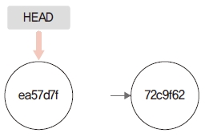
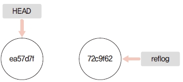

깃의 가비지를 정리하는 gc 명령어는 몇 가지 명령어와 함께 사용합니다. 그중 prune 명령어는 고 립된 객체를 정리하는 내부 유틸리티입니다.
깃은 객체를 이용하여 이력을 추적하고 변경된 내역을 기록합니다. 새로운 변경과 커밋이 있을 때 기존 객체를 다른 객체로 연결합니다. 즉, 앞에서도 이야기했듯이 객체들은 SHA1 해시 값을 사용 하여 서로 연결되어 있습니다. 어떤 객체를 새로운 커밋으로 재설정하면 참조 링크가 해제되는데, 이것은 해당 객체가 더 이상 필요하지 않다는 것입니다. 즉, 불필요한 객체가 생기는 것입니다. 고립된 객체는 객체 간 연결 고리가 끊겨 명령어를 사용해도 해당 객체에 접근할 수 없는 객체를 의미합니다. 고립된 객체는 불필요하므로 정리해야 합니다. 깃 자체적으로 완벽하게 정리하기 어 려우므로 수동으로 정리해야 합니다. 실습으로 이 내용을 익혀 봅시다.
prune 명령어를 실습할 수 있게 저장소를 하나 생성합니다.
$ cd 실습폴더
$ mkdir git-prune 새 폴더 만들기
$ cd git-prune
infoh@DESKTOP MINGW64 /e/git-prune (master)
$ git init 저장소 초기화
Initialized empty Git repository in E:/git-prune/.git/
prune.md 파일을 만들고 첫 번째 커밋을 합니다.
infoh@DESKTOP MINGW64 /e/git-prune (master)
$ code prune.md VS Code 실행
prune.md
# Prune 실습입니다.
infoh@DESKTOP MINGW64 /e/git-prune (master)
$ git add prune.md 등록
infoh@DESKTOP MINGW64 /e/git-prune (master)
$ git commit -m "first" 커밋
[master (root-commit) ea57d7f] first
1 file changed, 1 insertion(+)
create mode 100644 prune.md
예제 파일을 한 번 더 수정합니다. 두 번째 커밋을 합니다.
infoh@DESKTOP MINGW64 /e/git-prune (master)
$ code prune.md VS Code 실행
prune.md
# Prune 실습입니다.
Prune은 깃 객체를 정리하는 내부 유틸리티입니다.
infoh@DESKTOP MINGW64 /e/git-prune (master)
$ git add prune.md 등록
infoh@DESKTOP MINGW64 /e/git-prune (master)
$ git commit -m "second" 커밋
[master 72c9f62] second
1 file changed, 2 insertions(+), 1 deletion(-)
그림 12-12 커밋된 실습 환경

실습을 위해 커밋을 2개 생성했습니다.
prune 명령어는 고립된 객체를 정리하는 기능입니다. 따라서 깃 내부에 고립된 객체가 있어야 합 니다. 리베이스 또는 리셋 등 명령어 작업들은 고립된 객체를 생성합니다. 실습을 위해 인위적으 로 고립된 객체를 생성해 보겠습니다.
먼저 log 명령어로 커밋 기록을 확인합니다.
infoh@DESKTOP MINGW64 /e/git-prune (master)
$ git log 커밋 기록
commit 72c9f62bc5f9577250fcc8437a2ad3883e35dff1 (HEAD -> master)
Author: hojin <infohojin@gmail.com>
Date: Tue Feb 19 16:28:38 2019 +0900
second
commit ea57d7fdd9be86740511c9ca81aba0c004302d5d
Author: hojin <infohojin@gmail.com>
Date: Tue Feb 19 16:25:43 2019 +0900
first
reset 명령어를 사용하여 마지막 커밋을 강제로 제거합니다.
infoh@DESKTOP MINGW64 /e/git-prune (master)
$ git reset --hard ea57d7f 하드 리셋으로 삭제
HEAD is now at ea57d7f first
첫 번째 커밋을 –hard 옵션을 사용하여 리셋했습니다. –hard 옵션을 사용한 리셋은 워킹 디렉터 리와 스테이지를 삭제하며, 지정한 커밋으로 저장소를 되돌립니다. HEAD 포인터도 같이 이동됩 니다.
그림 12-13 –hard 옵션을 사용한 리셋

로그를 확인합니다. 리셋 후 두 번째 커밋은 log에 출력되지 않습니다.
infoh@DESKTOP MINGW64 /e/git-prune (master)
$ git log 커밋 기록
commit ea57d7fdd9be86740511c9ca81aba0c004302d5d (HEAD -> master)
Author: hojin <infohojin@gmail.com>
Date: Tue Feb 19 16:25:43 2019 +0900
first
사실 커밋을 –hard 옵션을 사용하여 리셋하더라도 내부적으로 생성한 객체를 물리적으로 삭제하 지 않습니다. 삭제한 후에도 이전의 커밋으로 직접 체크아웃할 수 있습니다. 제거된 커밋 해시로 체크아웃하겠습니다.
infoh@DESKTOP MINGW64 /e/git-prune (master)
$ git checkout 72c9f62 삭제된 커밋
Note: checking out '72c9f62'.
You are in 'detached HEAD' state. You can look around, make experimental
changes and commit them, and you can discard any commits you make in this
state without impacting any branches by performing another checkout.
If you want to create a new branch to retain commits you create, you may
do so (now or later) by using -b with the checkout command again. Example:
git checkout -b <new-branch-name>
HEAD is now at 72c9f62 second
infoh@DESKTOP MINGW64 /e/git-prune ((72c9f62...))
커밋을 리셋한 후에도 체크아웃됩니다. 즉, 72c9f62 커밋 객체가 물리적으로 삭제되지 않았다는 것입니다. 리셋은 단지 객체 연결 고리를 해제하여 끊긴 상태로 처리하며, 이 커밋은 깃 내부 저장소 에 고립된 객체로 남아 있습니다.
지금까지 고립된 객체를 임의적으로 생성해 보았습니다. 다시 이전의 브랜치 상태로 돌아갑시다.
infoh@DESKTOP MINGW64 /e/git-prune ((72c9f62...))
$ git checkout master 브랜치 이동
리셋으로 제거된 객체는 삭제되지 않고 고립된 객체가 됩니다. 리셋으로 객체까지 완벽하게 삭제 하려면 prune 명령어를 사용합니다.
prune 명령어를 실행할 때는 다음 두 옵션을 같이 사용합니다.
prune 명령어를 사용하여 남아 있는 고립된 객체를 삭제해 보겠습니다.
infoh@DESKTOP MINGW64 /e/git-prune (master)
$ git prune --dry-run --verbose 객체 삭제
prune 명령어는 실행 후의 작업 결과를 출력합니다. 하지만 어떤 메시지도 출력하지 않았습니다. 이처럼 작업 메시지가 없는 것은 아직 깃 내부에 고립된 객체가 없어 prune 동작 자체가 실행되 지 않은 것입니다.
그럼 이전에 리셋으로 제거한 객체는 무엇일까요? 리셋은 단지 커밋의 참고 연결 고리만 해제한 것입니다. 사실 깃은 생성된 객체를 쉽게 삭제하는 것을 허용하지 않습니다. 정확하게 말하자면 참고 연결 고리만 해제한 객체와 실제 고립된 객체는 서로 다릅니다.
여기서 고립한다는 것은 어떤 명령어로도 해당 객체에 접근할 수 없어야 한다는 의미입니다. 하지만 이전에 우리는 해시 값을 사용하여 리셋으로 삭제한 커밋으로 체크아웃한 경험이 있습니다. 체크 아웃할 수 있다는 것은 아직 객체에 접근이 허용된다는 의미입니다.
깃은 참조된 모든 객체의 연결 고리를 reflog에 이중으로 기록합니다. reflog는 깃에서 참조된 모든 객체의 기록을 일정 기간 유지하는 역할을 합니다. 리셋 명령만으로는 객체와 연결한 모든 고리를 완벽하게 제거할 수 없다는 것입니다.
그림 12-14 reflog 기록

prune 명령어를 실행하려면 완벽하게 고립된 객체여야 합니다. 따라서 reflog에 기록된 연결 고 리 링크도 같이 제거해야 합니다. reflog는 일정 기간이 지나면 자동으로 없어지지만, 실습을 위 해 연결 고리를 직접 제거해 보겠습니다.
infoh@DESKTOP MINGW64 /e/git-prune (master)
$ git reflog expire --expire=now --expire-unreachable=now --all reflog 삭제
현재를 기준으로 그보다 오래된 모든 reflog는 만료합니다. 이제 리셋된 객체를 참조하는 어떤 링 크도 없습니다. 완벽히 고립된 객체가 되었습니다.
그림 12-15 고립된 객체

prune 명령어를 다시 실행합니다.
infoh@DESKTOP MINGW64 /e/git-prune (master)
$ git prune --dry-run --verbose 객체 삭제
72c9f62bc5f9577250fcc8437a2ad3883e35dff1 commit
7b8892419d5b2dee26a1da84a01bf87788629931 tree
9544667cca54b0546ceabb2e544761548be455d0 blob
이전과 달리 작업 내역이 출력됩니다. 하지만 –dry-run 옵션을 사용했기 때문에 정리 작업은 실 제로 진행하지 않고, 예상되는 작업 결과만 미리 보여 줍니다. 정말로 완전히 삭제하려면 –expire 옵션을 사용합니다.
infoh@DESKTOP MINGW64 /e/git-prune (master)
$ git prune --expire now -v 객체 삭제 실행
72c9f62bc5f9577250fcc8437a2ad3883e35dff1 commit
7b8892419d5b2dee26a1da84a01bf87788629931 tree
9544667cca54b0546ceabb2e544761548be455d0 blob
일반적으로 prune 명령어는 개발자가 직접 실행하지 않는 편입니다. 참고로 prune 명령어는 gc 명 령어의 하위 명령어입니다.
보통 prune 명령어는 로컬 환경에서 실행합니다. 하지만 고립된 객체는 원격 저장소에도 있을 수 있습니다. remote/fetch 명령어를 같이 조합하면 원격 저장소에서도 prune 명령어를 실행할 수 있 습니다.
$ git remote prune
원격 저장소의 브랜치를 병합한 후 삭제합니다. 삭제된 원격 저장소 브랜치는 더 이상 참조할 수 없습니다.
$ git fetch --prune
fetch –prune 명령어는 오래된 브랜치를 정리합니다. 원격 저장소에 연결한 후 제거하기 전에 최신 상태를 먼저 가져옵니다.